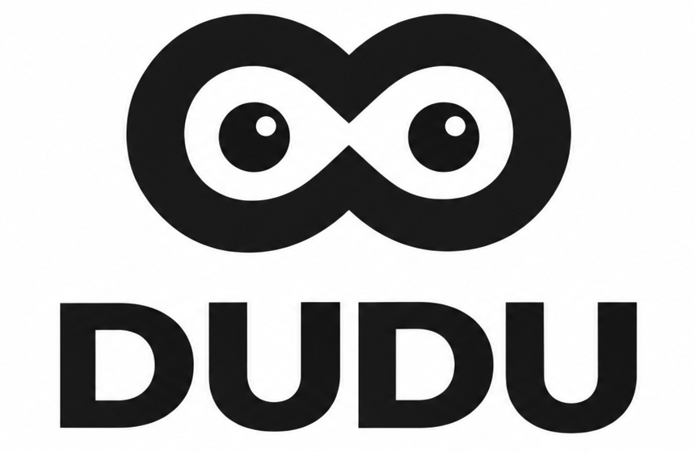
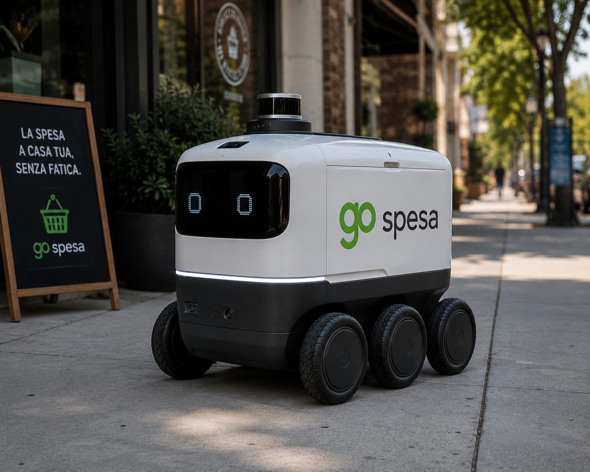
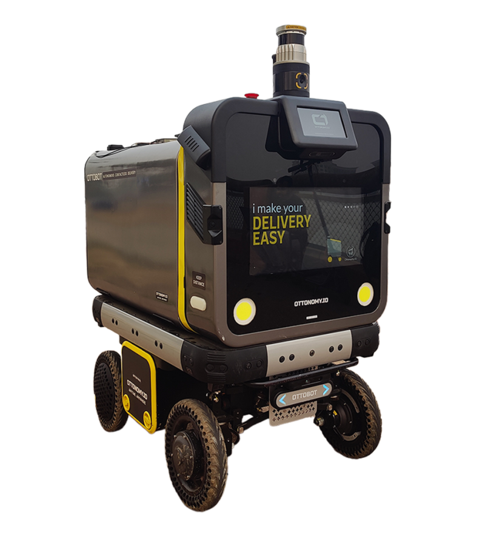

Ristoranti → clienti
Trasporta il cibo preparato all'interno di un centro commerciale o ambiente indoor senza richiedere al personale di effettuare ogni consegna.

DUDU ROBOTS
CONSEGNA AUTONOMA NEI LUOGHI DI OGNI GIORNO
I robot DUDU trasportano cibo, ordini retail e consegne quotidiane in centri commerciali e spazi indoor — in modo autonomo, sicuro e visibile.

[ COS'È DUDU ]
DUDU Robots porta la consegna autonoma nei luoghi dove le persone fanno acquisti, lavorano e mangiano. DUDU è la tecnologia e il concetto operativo di delivery; Go Spesa è un caso reale di utilizzo della piattaforma.
Da ristoranti e negozi fino ai centri commerciali, DUDU collega il punto dell'ordine con il punto di consegna, creando anche nuove opportunità di visibilità per i brand.
LE NOSTRE SOLUZIONI
Configura l'esperienza di consegna in base alla tua struttura, ai tuoi flussi e ai tuoi clienti.
Trasporta il cibo preparato all'interno di un centro commerciale o ambiente indoor senza richiedere al personale di effettuare ogni consegna.
Trasporta prodotti e ordini tra negozi, punti di ritiro, dipendenti e clienti all'interno della stessa struttura.
Trasforma il robot in un punto di contatto mobile per il tuo brand, con visibilità digitale durante reali percorsi di consegna.
COME FUNZIONA
Un flusso operativo semplice, progettato per integrarsi nel ritmo quotidiano di un centro commerciale o ambiente indoor.
Un cliente o un dipendente effettua un ordine.
Il ristorante o il negozio inserisce l'ordine in DUDU.
DUDU si muove autonomamente nell'ambiente.
Il destinatario riceve l'ordine a destinazione.
DUDU torna pronto per la prossima consegna.
Il primo caso d'uso di DUDU è dedicato alla consegna autonoma food e retail all'interno del Centro Commerciale Globo, Busnago.
Il pilot ci permette di imparare dalle operazioni reali e creare un modello adattabile ad altri centri commerciali.
Parla del pilot ↗LA NOSTRA PIATTAFORMA
DUDU integra la robotica mobile autonoma in ambienti reali di consegna, adattando la piattaforma alle esigenze di centri commerciali, retailer e operatori food.
Organizza una dimostrazione ↗DUDU / PIATTAFORMA DELIVERY
ROBOTICA AUTONOMA

[ PARTNER TECNOLOGICI E DELIVERY ]
Tecnologia di robotica mobile autonoma a supporto della piattaforma di delivery DUDU e dei progetti di implementazione nel mondo reale.
Un'attività reale di consegna food e retail che aiuta a dimostrare come DUDU possa collegare gli ordini ai clienti negli ambienti di ogni giorno.
[ PER I BRAND ]
DUDU può creare un'ulteriore opportunità di comunicazione digitale all'interno di ambienti ad alto afflusso. Un robot per la consegna può essere allo stesso tempo infrastruttura utile e punto di contatto visibile per il tuo brand.
Parla di advertising ↗CONSEGNA + VISIBILITÀ + ENGAGEMENT DIGITALE
PERCHÉ DUDU
Vogliamo che la consegna autonoma sia utile, accessibile e semplice da integrare nelle operazioni quotidiane.
Che tu sia un centro commerciale, ristorante, retailer, partner tecnologico o brand, scopriamo cosa può fare DUDU nel tuo ambiente.
Prenota una demo ↗FACCIAMO MUOVERE LE COSE
Organizza una presentazione con il team DUDU.